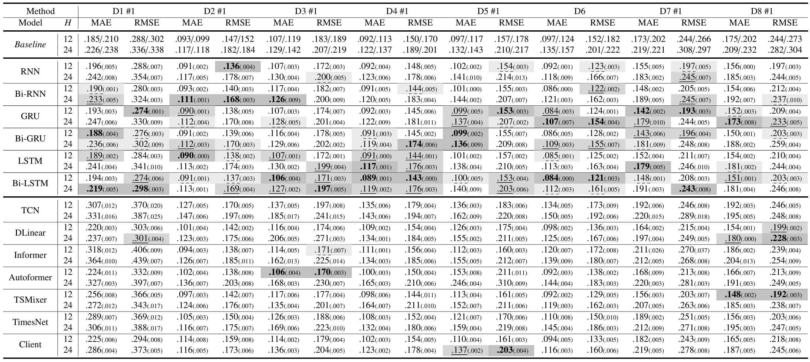
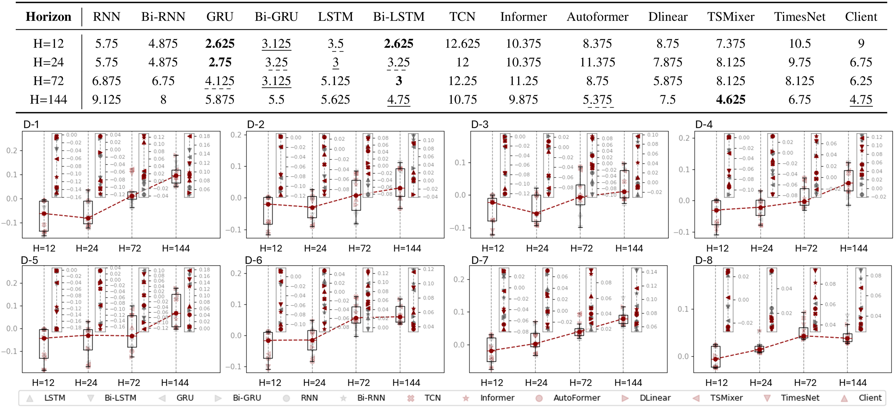

First image description.

Second image description.

Wind power generation is a critical and promising renewable energy source, and accurately forecasting its output can optimize energy management and yield substantial economic benefits. Despite the fact that a considerable number of the recent Wind Power Forecasting (WPF) studies employs neural network-based deep learning techniques, these studies are often conducted independently. There is an urgent need for a comprehensive benchmark to validate the effectiveness and robustness of neural networks in this domain and provide more valuable guidance for engineering practice. In this study, we first methodically delineate the task objectives of neural networks in WPF. Subsequently, we categorize neural network structures and task paradigms into autoregressive/non-autoregressive networks and deterministic/probabilistic predictions. Building on this, we establish a unified cross-dataset benchmark for neural networks in the WPF domain, namely OpenWPF, which incorporates eight global wind power operation datasets at both turbine and farm scales. Finally, we conduct a series of neural network evaluation experiments based on this benchmark. The results indicate that neural networks excel in longer forecasting horizons, while autoregressive models show greater robustness in short-term forecasting, with non-autoregressive models progressively mitigate disparities in long-term forecasting.
| Dataset | Description |
|---|---|
| Dataset 1 | SDWPF is a large wind power forecasting dataset, which contains 134 wind turbines located in China and 11,361,191 records. The data is collected by SCADA system of a wind farm belonging to China Longyuan Power Group Corp. Ltd. The dynamic contextual factors was recorded by ten minutes and the spatial distribution of wind turbines is also provided. The SDWPF dataset was first introduced by Baidu during the KDD Cup 2022 Challenge at the 2022 ACM SIGKDD conference as part of a wind energy forecasting challenge. Challenge participants were tasked with forecasting wind power output for the next 48 hours using only historical data. In the latest version, the creators have released additional meteorological data based on ERA5. |
| Dataset 2 Dataset 3 | Constructed in 2016, the Penmanshiel wind farm in Scotland (28.7 MW) and the Kelmarsh wind farm in England (12.5 MW) provide detailed 10-minute interval SCADA data from 2016 to 2021. This dataset includes nearly 300 columns and more than 5.4 millions records, offering extensive information on wind turbine operation and maintenance. According to the Global Energy Monitor (GEM) database, the precise WGS 84 coordinates for these wind farms are (55.8969, -2.3213) for Penmanshiel and (52.4028, -0.9598) for Kelmarsh. Penmanshiel wind farm has 14 wind turbines of the same model, while Kelmarsh wind farm has 6 wind turbines of the same model. This data has been released by Cubico Sustainable Investments Ltd. |
| Dataset 4 | This dataset comprises six wind farms, with nominal generation output capacities ranging from 36 MW to 200 MW. The largest wind farm includes 72 wind turbines, while the smallest consists of 18 turbines. To encompass various climate zones and geographic locations, the selected wind farm sites are strategically located across north, central, and northwest China, featuring diverse terrains such as deserts, mountains, and plains. It has 421,056 records over two years (2019-2020), collected every 15 minutes. |
| Dataset 5 | Yalova onshore wind farm is located in west Turkey and comprises 36 wind turbines. We obtained the data from 2018 on the Kaggle website, which was selected from key information in the SCADA system. This dataset is currently widely used in the Kaggle community for testing and validating various machine learning models. |
| Dataset 6 | Provided by the Brazilian Electricity Regulatory Agency, the dataset contains information from two operating onshore wind farms in Brazil during the period from August 2013 to July 2014. The wind farms are Pedra do Sal wind farm (18 MW) and Beberibe wind farm (26 MW), are located on the northeast coast of Brazil where meteorological conditions are strongly influenced by trade winds and sea breeze. The exact WGS 84 geographic coordinates for these wind farms, which are publicly available from GEM, are (-2.8262, -41.7071) and (-4.1936, -38.0766), respectively. The two wind farms collectively have 52 turbines, 20 for Pedra do Sal wind farm and 32 for Beberibe wind farm. This dataset was collected using a comprehensive sensor system that includes first-class calibrated cup anemometers, 3D sonic anemometers, and Doppler wind lidar. |
| Dataset 7 Dataset 8 | The datasets provided by GEFCom 2012 and 2014 are two of the most popular benchmark for wind power forecasting. Wind power probabilistic forecasting was the one of four tracks in the GEFCom2014 competition, aim to predict the wind power generation 24h ahead in 10 zones, corresponding to 10 wind farms in Australia, on a rolling basis. In GEFCom 2012, the wind power forecasting track was required the participants to forecast the hourly wind power generation for seven wind farm, based on three years of historical data. |